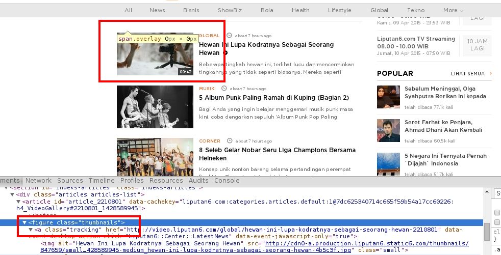
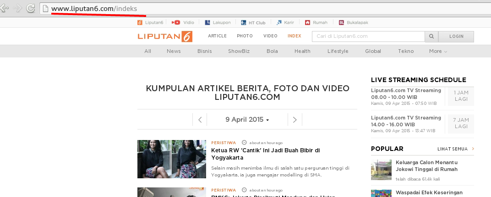
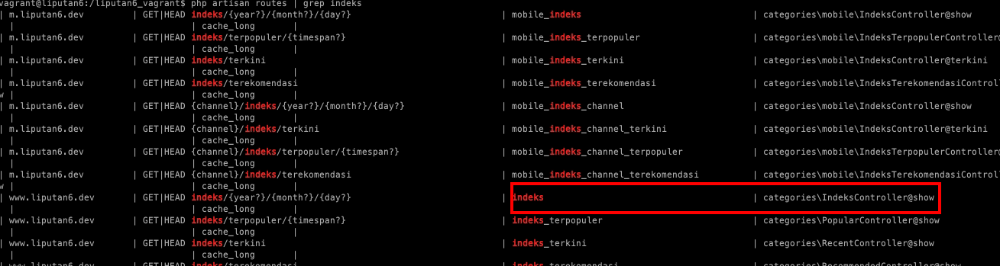
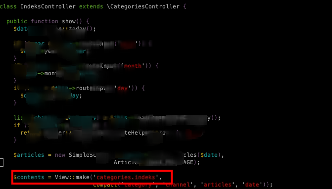
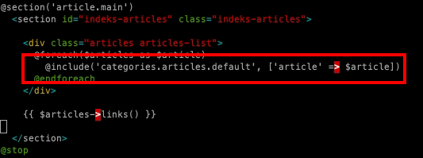
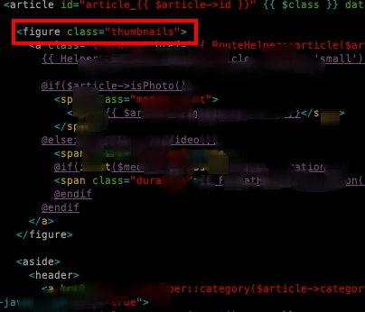
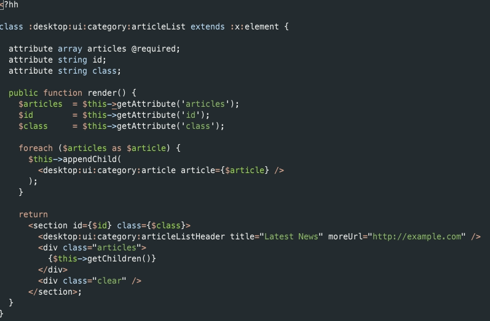

XHP is an augmentation of PHP developed at Facebook to allow XML syntax for the purpose of creating custom and reusable HTML elements.
Originin
XHP was loosely inspired by ECMAScript for XML[1] and created by Marcel Laverdet. It was first developed for Facebook Lite as a new UI rendering layer but was later ported over to Facebook's www and mobile web stack as well as incorporated into HipHop for PHP. It was made available to the public in February 2010 and now accounts for nearly all of Facebook's server-side generated HTML over all of its properties.
Why Using Xhp?
1 - Tidak ada dokumentasi UI component.

Langkah 1

Langkah 2
php artisan routes | grep indeks

Langkah 3
vim app/controller/IndeksController

Langkah 4
vim app/views/categories/index.blade.php

Langkah 5
vim app/views/categories/articles/default.blade.php

"Jangan Buang Masa.... 😡"
Yang saya mau
"HAHA"
2 - Duplicate View
3 - Lupa tutup tag
Benefit
XHP offers a much cleaner interface to UI programming when outputting HTML in PHP, but has some engineering advantages as well.
Parse-time validation of HTML syntax.
XHP validates the syntax and structure of the entire document tree on render and will throw an exception if an element was not closed properly, has invalid children, has an invalid attribute, or is missing required children or attributes.
Title
Automatic XSS protection.
Because all rendering to the page is done inside XHP, and it knows what is HTML and what is content, XHP escapes all content without any special effort from the programmer.
echo '
Hello '.htmlspecialchars($_GET['name']).'
';
echo
Hello {$_GET['name']}
;
Object mutation.
XHP objects are stored as standard PHP objects, so they can be manipulated through a DOM-like API, which includes methods such as setAttribute(), getAttribute(), appendChild(), and several others prior to or during render.

Custom HTML.
Instead of writing functions to generate HTML, or switching in and out of PHP, custom XHP elements can defined and mixed in with standard HTML elements that will abstract out common HTML structures.